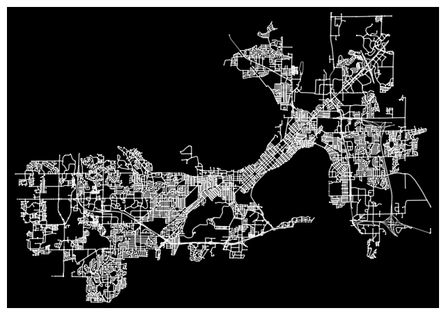
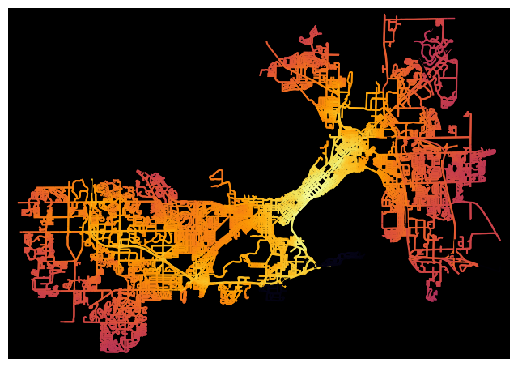

Network Analysis (OSMNx)
For my Network Analysis project, I utilized two Python libraries, OSMnx and NetworkX, to analyze complex road networks. OSMnx enables users to access and analyze OpenStreetMap (OSM) data, and visualize street networks on interactive maps. NetworkX is a comprehensive Python package that provides tools for creating, manipulating, and studying intricate networks. By combining the capabilities of these two packages, users can conduct various network analysis tasks on street networks, such as identifying the shortest paths between nodes, detecting the centrality of nodes, and recognizing communities within the network.
** Vist my GitHub to view the code for analysis steps and visualization.

In this project, I applied network analysis techniques to Madison, Wisconsin. Initially, I extracted the network dataset and saved it as a shapefile. I then computed edge_centrality_closeness, which enables us to determine the areas of the network with high or low closeness centrality. Next, I calculated Betweenness centrality, which measures the frequency of shortest paths between node pairs passing through a particular node. Finally, I computed Degree centrality, which indicates the number of edges that connect to a node in a network. These analyses allowed me to study the structure, dynamics, and functions of complex road networks in Madison, Wisconsin.

{kind=link}
{kind=link}